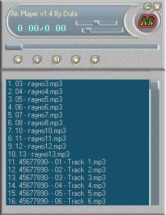

| Версия | 2.1 3b |
| Сайт: | http://www.akelpad.net.ru/ |
| Размер: | 19 Кб |
| Статус: | Freeware |
| Русский интерфейс: | Есть |
Начинающими программистами уже написано столько заменителей "Блокнота", что на них уже перестаешь обращать внимание. Но на эту программу я все-таки обратил внимание в первую очередь из-за размера. У программы есть все функции стандартного "Блокнота" и она предоставляет некоторые дополнительные возможности. Очень радует возможность изменять кодировку текста(Windows-1251, DOS-866, Unicode, кстати, кодировку программа определяет сама. Есть очень даже неплохой поиск, можно перейти на определенную строку указав ее номер. Настроек маловато(а зачем они вообще нужны в такой программе?), но они есть: изменение шрифта и фона программы. Еще одна интересная возможность: можно открыть стандартную "Таблицу символов" и вставить в программу нужные спецсиволы. В общем все неплохо, но тут нет ничего такого, чего не было бы в "Блокноте", кроме, конечно, смены кодировок: "Таблицу символов" я могу открыть сам и вообще зачем нужен выбор цвета шрифта и фона программы?
Оценка: 7/10
Вывод: несмотря на наличие большого количества достоинств, смысла я в этой программе не вижу. Из-за этого не очень высокая оценка.
| Версия | 1.4 |
| Сайт: | http://www.dufa.land.ru |
| Размер: | 127 Кб + bass.dll, fmod.dll(нужно скачивать отдельно) |
| Статус: | Freeware |
| Русский интерфейс: | Есть |

Вот программа, написанная нашим форумчанином Duf'ой или более известным как Andrey_Kun. Этот музыкальный плейер поддерживает форматы *.mp3, *.mp2, *.mp1, *.wav, *.ogg, *.mpg, *.mpeg, *.m2v, *.avi, *.asf, *.wmv. Программа имеет очень приятный скин и возможность самому их добавлять, если вы создадите свой. В программе есть эквалайзер, поддержка сохранения и загрузки плейлистов.
Оценка: 8/10
Вывод: конечно, вы можете сказать, что есть множество других плейеров, у которых возможностей намного больше, но что вы вам нужно кроме красивого скина и поддержки большого количества форматов? Но все-таки хотелось бы иметь, например, конвертатор из формата в формат и многое другое.
| Версия | 4.0 |
| Сайт: | http://www.badevlad.hotmail.ru |
| Размер: | 329 Кб |
| Статус: | Freeware |
| Русский интерфейс: | Есть |
Так получилось, что в этом номере я написал обзоры сразу двух текстовых редакторов: этого и AkelPad'а. Но в отличии от последнего эта программа понравилось мне больше. Программа позволяет вставить в текст дату, время, имя файла(выбирается в диалоге) и спецсимвол. Можно перекодировать текст (Dos -> Win, Win -> Dos, Win -> KOI8-R, KOI8-R -> Win). Программа подсвечивает все URL-адреса и позволяет открыть их, если это необходимо. После того, как вы написали некий текст, вы можете сразу же отправить по электронной почте.
Оценка: 8/10
Вывод: отличная программа, но я бы хотел возможностей "покруче", например, подсведтку синтаксиса HTML или плагины.
| Версия | 2.9 |
| Сайт: | http://www.softella.com |
| Размер: | 953 Кб |
| Статус: | Freeware |
| Русский интерфейс: | Есть |
Различных видео-плейеров я видел около десятка, но пользуюсь я именно этим. И сейчас вы узнаете почему. Скачав эту программу с официального сайта, я принялся ее устанавливать. Установка прошла быстро и не вызвала вопросов. Но при запуске программа показала окошечко, в котором былр написанна, что мне нужно зарегистрироваться(хотя на сайте было написанно, что для жителей бывшего СССР программа бесплатна). Я смело нажал кнопку "Регистрация". Открылось еще одно окно, в котором меня попросили отгадать загадку. Я ее отгадал и регистрация прошла успешно! Теперь приступим к непосредственному описанию программы. Программа может проигрывать DVD, AVI, MPEG, ASF, а также MP3, WAV, MID и др. Кстати, забыл сказать: для работы программе нужен DirectX 8.0 или выше(думаю, он есть у всех). Light Alloy имеет довольно приятный интерфейс(кстати, на сайте программы можно скачать несколько дополнительных скинов). В программе есть огромное количество настроек видео(можно изменять яркость, контраст, насыщенность, масштаб и др.), можно загрузить субтитры. Очень порадовала возможность сохранения текущего кадра.
Оценка: 9/10
Вывод: отличная программа, очень радует размер(при поддержке такого количества форматов) и различные мелочи.
| Версия | 1.0.1.7 |
| Сайт: | http://freestone-group.com/ |
| Размер: | 92 Кб |
| Статус: | Donateware |
| Русский интерфейс: | Нет |
Иногда бывают такие ситуации, когда вы плохо видите и, например, забыли где-нибудь(или потеряли) свои очки(или линзы). Именно для таких случаев и предназнаена эта программа. После установки программы в трее появилась ее иконка. Выбрав пункт меню "Show/Hide" под курсором появилась прямоугольная область, в которой отображалось, то, что изображено под курсором, только увеличенное. Порывшись в настройках Magical Glass'а, я обнаружил несколько возможностей: измнение вида прямоугольной области, выбор вида курсора(точка или стрелка), добавление в автозагрузку, скорость обновления, изменение горячих клавиш. В общем програмка неплохая. Мне она не нужна, но слабовидящим людям может очень помочь.
Оценка: 8/10
Вывод: неплохая программа, что еще сказать?
| Версия | 2.0 |
| Сайт: | http://p2000.narod.ru/ |
| Размер: | 1340 Кб |
| Статус: | Freeware |
| Русский интерфейс: | Есть |
У вас есть дети, которые обожают раскрашивать раскраски, но вам надоело вечно тратить деньги на их приобретение? Вы обожали раскрашивать раскраски в детстве и решили вспомнить детсво? Тогда эта программа специально для вас! Ну, ладно, хватит рекламы. При помощи программы Раскраска можно раскрашивать рисунки без всяких проблем(с программой поставляется несколько рисунков). Также можно закрашивать рисунок текстурой(одной из 16). После того, как вы раскрасили рисунок, вы можете рапечатать его или сделать рисунком рабочего стола. В настройках можно изменять вид палитры(круглая или прямоугольная). Ко всему этому программа обладает приятным интерфейсом.
Оценка: 10/10
Вывод: незаменимая программа при выше описанных случаях.